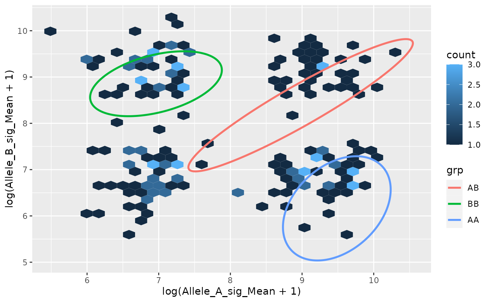
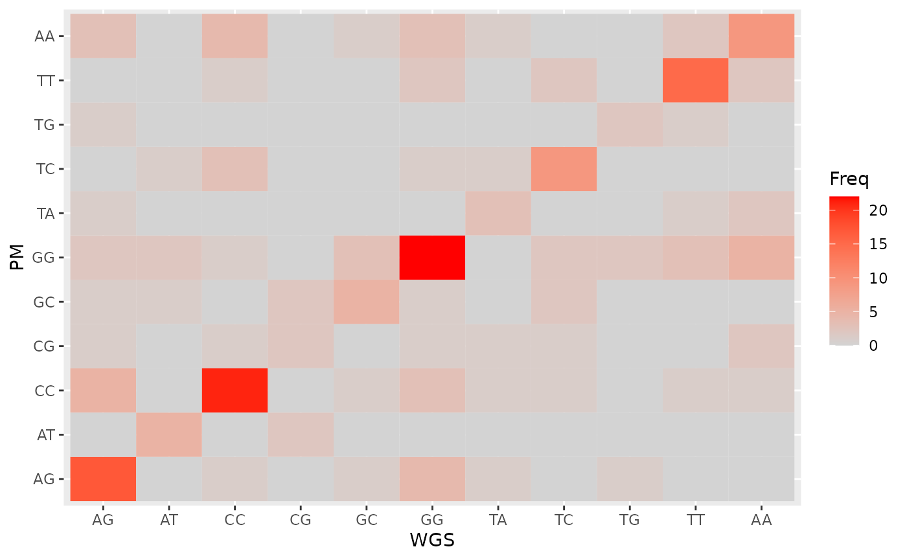

library(snpbeadchip)
library(data.table)
library(mclust)
#> Package 'mclust' version 5.4.10
#> Type 'citation("mclust")' for citing this R package in publications.
library(ggplot2)Can use illuminaio::readIDAT() directly, or use this
package’s function read_idat_single().
Here is a skeleton:
library(data.table)
library(omni54manifest)
idat <- read_idat_single("/path/to/files/", "001_Red.idat", "002_Grn.idat")
setnames(idat, "Name", "Address_ID")
manifest <- load_manifest() # From omni54manifest
m_idat <- annotate_manifest_with_idat(manifest, idat)
m_idatYou end up with something like the included example dataset (which is just simulated data):
data(idat_ex, package = "snpbeadchip")
data(idat_ex)
colnames(idat_ex)
#> [1] "Name" "IlmnID" "RsID"
#> [4] "Chr" "MapInfo" "AddressA_ID"
#> [7] "AddressB_ID" "GenomeBuild" "SNP"
#> [10] "IlmnStrand" "SourceStrand" "TopGenomicSeqSBE"
#> [13] "TopGenomicSeqSBE_Left" "TopGenomicSeqSBE_Right" "BeadSetID"
#> [16] "Exp_Clusters" "RefStrand" "ProbeType"
#> [19] "SNPType" "Exclude" "MappingComment"
#> [22] "A_Red_Mean" "A_Grn_Mean" "B_Red_Mean"
#> [25] "B_Grn_Mean" "A_Red_SD" "A_Grn_SD"
#> [28] "B_Red_SD" "B_Grn_SD" "A_Red_NBeads"
#> [31] "A_Grn_NBeads" "B_Red_NBeads" "B_Grn_NBeads"
dim(idat_ex)
#> [1] 200 33
head(idat_ex)
#> Name IlmnID RsID Chr
#> 1: rs10000911 IlmnSeq_rs10000911_IlmnDup-131_B_F_2336897696 rs10000911 4
#> 2: rs10000988 IlmnSeq_rs10000988_IlmnDup-131_B_F_2336897694 rs10000988 4
#> 3: rs10002181 IlmnSeq_rs10002181_IlmnDup-131_T_F_2336897690 rs10002181 4
#> 4: rs10005140 IlmnSeq_rs10005140_IlmnDup-131_T_F_2336897678 rs10005140 4
#> 5: rs10005242 IlmnSeq_rs10005242_IlmnDup-131_T_F_2336897676 rs10005242 4
#> 6: rs10010434 IlmnSeq_rs10010434_IlmnDup-131_B_R_2336897669 rs10010434 4
#> MapInfo AddressA_ID AddressB_ID GenomeBuild SNP IlmnStrand SourceStrand
#> 1: 143215040 31722985 NA 38 [T/G] BOT BOT
#> 2: 75085045 27622566 NA 38 [T/C] BOT BOT
#> 3: 141329261 75688121 NA 38 [A/G] TOP TOP
#> 4: 22363980 78784850 NA 38 [A/G] TOP TOP
#> 5: 5947831 68775897 NA 38 [A/G] TOP TOP
#> 6: 2699813 83689289 NA 38 [T/C] BOT TOP
#> TopGenomicSeqSBE TopGenomicSeqSBE_Left TopGenomicSeqSBE_Right BeadSetID
#> 1: T[A/C]A T A 1288
#> 2: C[A/G]T C T 1288
#> 3: C[A/G]A C A 1288
#> 4: A[A/G]t A t 1288
#> 5: T[A/G]C T C 1288
#> 6: C[A/G]G C G 1288
#> Exp_Clusters RefStrand ProbeType SNPType Exclude MappingComment A_Red_Mean
#> 1: 3 + II UNAMB FALSE 1006
#> 2: 3 + II UNAMB FALSE 1522
#> 3: 3 + II UNAMB FALSE 854
#> 4: 3 + II UNAMB FALSE 809
#> 5: 3 + II UNAMB FALSE 7147
#> 6: 3 - II UNAMB FALSE 857
#> A_Grn_Mean B_Red_Mean B_Grn_Mean A_Red_SD A_Grn_SD B_Red_SD B_Grn_SD
#> 1: 715 NA NA 285 472 NA NA
#> 2: 24282 NA NA 2051 629 NA NA
#> 3: 21942 NA NA 677 524 NA NA
#> 4: 360 NA NA 739 536 NA NA
#> 5: 13063 NA NA 568 298 NA NA
#> 6: 1641 NA NA 302 485 NA NA
#> A_Red_NBeads A_Grn_NBeads B_Red_NBeads B_Grn_NBeads
#> 1: 32 6 NA NA
#> 2: 11 17 NA NA
#> 3: 12 10 NA NA
#> 4: 18 15 NA NA
#> 5: 14 13 NA NA
#> 6: 12 13 NA NAThe function channel_probe_to_alleles() is used to
select the right addresses and colour channels to easier get mean signal
intensity for allele A and B:
d <- cbind(idat_ex, channel_probe_to_alleles(idat_ex))
d$SNP1 <- substr(d$SNP, 2, 2)
d$SNP2 <- substr(d$SNP, 4, 4)
d <- d[, c("RsID", "SNP1", "SNP2", "RefStrand", "Allele_A_sig_Mean", "Allele_B_sig_Mean")]
d_trans <- data.table(x = log(d$Allele_A_sig_Mean + 1),
y = log(d$Allele_B_sig_Mean + 1))Either train own model like (not easy with this small dataset)
Or use the supplied one:
fit <- get_call_model() Then call alleles:
pred <- predict(fit, newdata = d_trans)
grp <- apply(pred$z, 1, which.max)
prb <- apply(pred$z, 1, max)Convert clusters to alleles:
grp_AB <- cluster_to_AB(grp)
grp_PM <- to_plus_minus(grp_AB, d$SNP1, d$SNP2, d$RefStrand, sep = "")
table(grp_AB)
#> grp_AB
#> AB BB AA
#> 79 65 56
table(grp_PM)
#> grp_PM
#> AG AT CC CG GC GG TA TC TG TT AA
#> 25 7 34 9 12 42 7 15 4 22 23
table(grp_AB, grp_PM)
#> grp_PM
#> grp_AB AG AT CC CG GC GG TA TC TG TT AA
#> AB 25 7 0 9 12 0 7 15 4 0 0
#> BB 0 0 25 0 0 31 0 0 0 6 3
#> AA 0 0 9 0 0 11 0 0 0 16 20Want to impose a threshold?
grp_PM_NC <- ifelse(prb < 0.99, "NC", grp_PM)
sum(grp_PM_NC == "NC")
#> [1] 15
mean(grp_PM_NC == "NC")
#> [1] 0.075
table(grp_PM_NC)
#> grp_PM_NC
#> AG AT CC CG GC GG NC TA TC TG TT AA
#> 24 6 33 9 11 38 15 5 13 3 20 23Inspect information for certain posterior probability:
d_pred <- d
d_pred$prob <- prb
d_pred$PM <- grp_PM
d_pred[prob < 0.8, ]
#> RsID SNP1 SNP2 RefStrand Allele_A_sig_Mean Allele_B_sig_Mean prob
#> 1: rs10114570 T C + 5846 1368 0.7804533
#> 2: rs3817687 C G - 9884 17810 0.7817826
#> 3: rs6670616 A T - 5133 1279 0.5769653
#> PM
#> 1: TT
#> 2: CC
#> 3: TA
idat_ex_pred <- idat_ex
idat_ex_pred$prob <- prb
idat_ex_pred$PM <- grp_PM
idat_ex_pred[prob < 0.8, ]
#> Name IlmnID RsID Chr
#> 1: rs10114570 IlmnSeq_rs10114570_IlmnDup-131_B_F_2336897509 rs10114570 9
#> 2: rs3817687 IlmnSeq_rs3817687_IlmnDup-131_T_R_2336873167 rs3817687 8
#> 3: rs6670616 IlmnSeq_rs6670616_IlmnDup-131_T_R_2336876340 rs6670616 1
#> MapInfo AddressA_ID AddressB_ID GenomeBuild SNP IlmnStrand SourceStrand
#> 1: 25830484 29808538 NA 38 [T/C] BOT BOT
#> 2: 138145481 79609986 29657907 38 [C/G] TOP BOT
#> 3: 70929200 65709915 7734111 38 [A/T] TOP BOT
#> TopGenomicSeqSBE TopGenomicSeqSBE_Left TopGenomicSeqSBE_Right BeadSetID
#> 1: C[A/G]T C T 1288
#> 2: A[C/G]C A C 1288
#> 3: A[A/T]A A A 1288
#> Exp_Clusters RefStrand ProbeType SNPType Exclude MappingComment A_Red_Mean
#> 1: 3 + II UNAMB FALSE 5846
#> 2: 3 - I AMB FALSE 11190
#> 3: 3 - I AMB FALSE 5133
#> A_Grn_Mean B_Red_Mean B_Grn_Mean A_Red_SD A_Grn_SD B_Red_SD B_Grn_SD
#> 1: 1368 NA NA 536 760 NA NA
#> 2: 9884 6422 17810 511 536 338 171
#> 3: 3306 1279 1474 1370 1006 692 2040
#> A_Red_NBeads A_Grn_NBeads B_Red_NBeads B_Grn_NBeads prob PM
#> 1: 9 12 NA NA 0.7804533 TT
#> 2: 18 13 12 21 0.7817826 CC
#> 3: 19 27 9 9 0.5769653 TA
alpha <- 0.9
elipses <- do.call(rbind, lapply(seq_len(fit$G), function(j) {
mu <- fit$parameters$mean[, j]
S <- fit$parameters$variance$sigma[,,j]
mat <- mixtools::ellipse(mu = mu, sigma = S,
alpha = 1 - alpha,
npoints = 250,
newplot = FALSE,
draw = FALSE)
colnames(mat) <- c("x", "y")
mat <- as.data.frame(mat)
mat$grp <- c("BB", "AB", "AA")[j]
mat
}))
ggplot(d_pred, aes(log(Allele_A_sig_Mean + 1),
log(Allele_B_sig_Mean + 1))) +
geom_hex() +
geom_path(aes(x = x, y = y, group = grp, color = grp),
size = 1, alpha = 1, data = elipses) 
We imagine we had the whole-genome sequencing result:
set.seed(1)
d_pred$WGS <- d_pred$PM
d_pred$WGS[sample(seq_along(d_pred$WGS), 100)] <- d_pred$WGS[sample(seq_along(d_pred$WGS), 100)]
d_pred_tmp <- as.data.frame(xtabs(~ WGS + PM, d_pred))
ggplot(d_pred_tmp, aes(WGS, PM)) +
geom_tile(aes(fill = Freq)) +
scale_fill_gradient(low = "lightgrey", high = "red", na.value = NA)